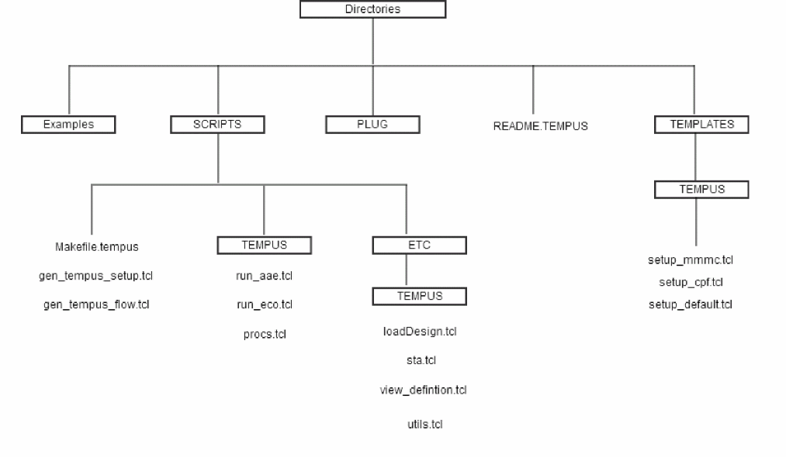

Understanding the Foundation Flows Framework
The foundation flow framework is described below:
Figure -3 The Foundation Flow Framework

The Tempus foundation flow directory consists of:
- EXAMPLES - a folder containing example scripts for a sample design. These scripts have design specific content that explains how to set up the scripts.
-
SCRIPTS - a folder containing the Tempus foundation flow related scripts. The Tempus directory in the SCRIPTS directory contains all the
run_*.tclfiles. - PLUG - Contains Tempus plug-in scripts. These scripts provide an easy method to expand and customize the basic flows.
- README.Tempus - a file containing the directory structure of the foundation flow, the content of each directory, and how to use the foundation flows.
-
TEMPLATES - a folder containing the
setup_mmmc.tcl,setup_cpf.tcl, andsetup_default.tclfiles that defines the variables to use in the MMMC analysis, low power, and single view non MMMC flow.
Return to top